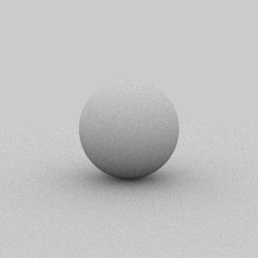
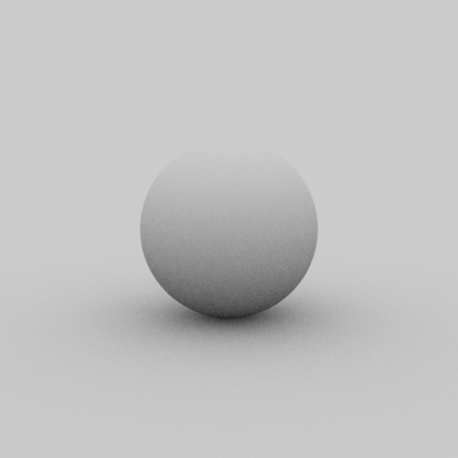
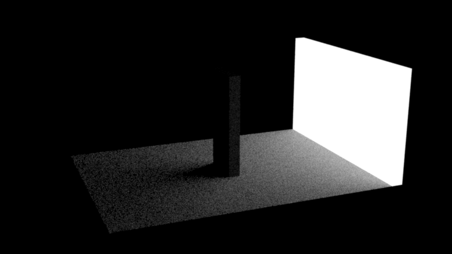
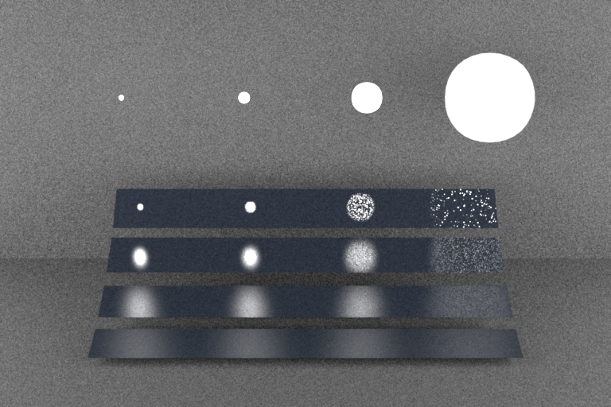
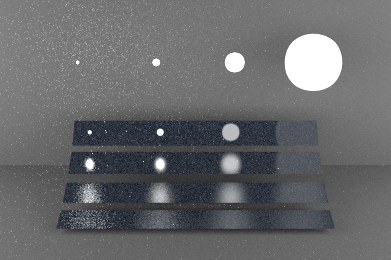
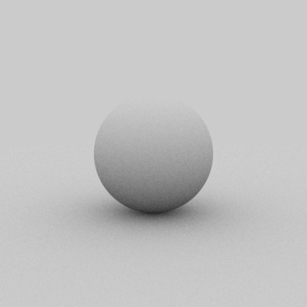
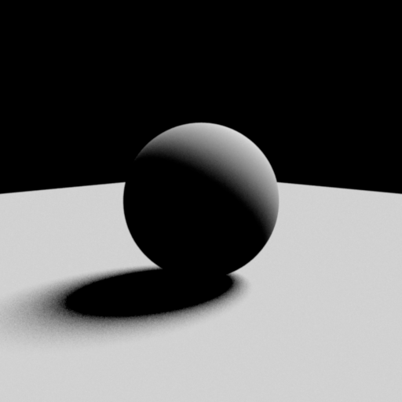
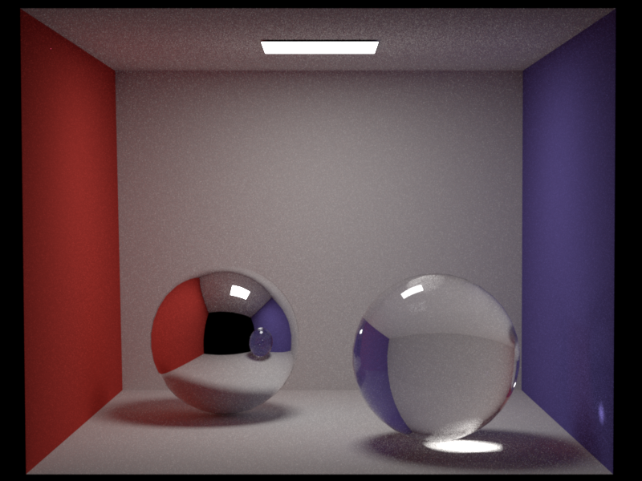
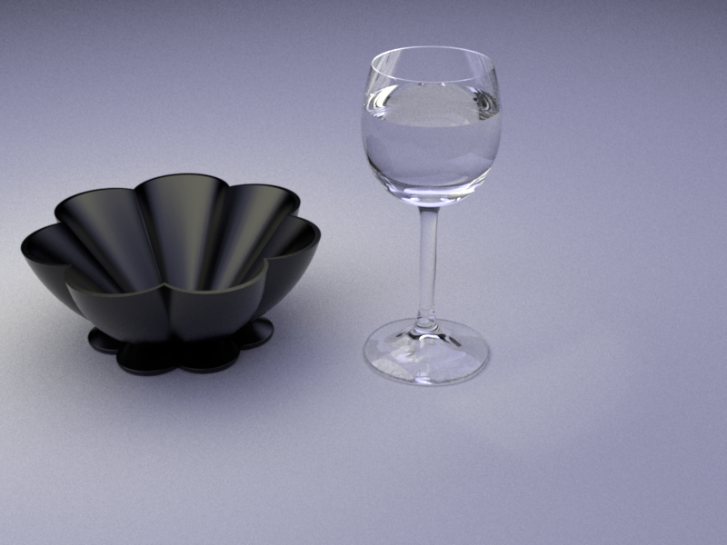
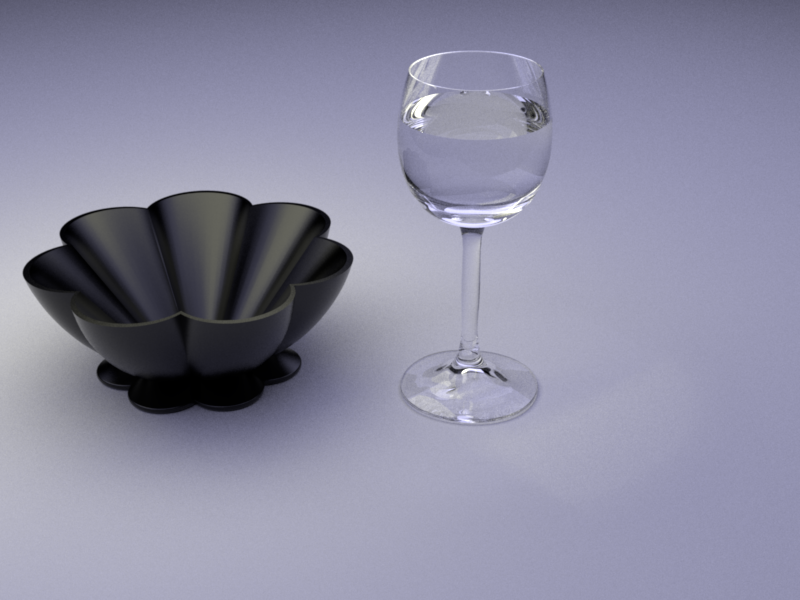

Programming Assignment 2 Monte Carlo Tracings
Preliminaries
In this programming assignment, you will be implementing various flavors of didrect illumination integrators with different sampling distributions. You also will add new kinds of emitters with finite extent (i.e. not point sources) and two new BSDFs. Lastly, you will implement a path tracer that computes full globall illumination in the scene.
Like in the first assignment, we don't explicitly specify an API that you should use to implement the sampling and evaluation operations for emitters—finding suitable abstractions is part of the exercise. That said, you can look at the BSDF definitions in the wakame.bsdf.Bsdf class to get a rough idea as to how one might get started with such an interface.
Start by porting the code you wrote for PA1 to the pa2 directory in the repository.
Part 1: Light Sampling
Part 1.1: Integrator Implementation
In this part you will implement a new direct illumination integrator (direct_ems) which can integrate incident radiance by performing emitter sampling. In addition to point lights, this integrator will be able to handle three additional types of emitters: distant disk lights, and mesh (area) lights. These new emitters can be fully, partially or not at all visible from a point in your scene, so you will perform Monte Carlo integration to compute reflected radiance (accounting also for visibility) at your first camera intersection.
The integrator willl compute the local illumination integral: \[ L_o (\vp,\omega_o) = L_e(\vp,\omega_o) + \int_{H^2} f_r (\vp,\omega_o,\omega_i)\,L_i (\vp,\omega_i)\cos \theta_i \, \mathrm{d} \omega_i. \] where \(f_r\) is the BRDF, \(p\) is a surface position and \(L_i\) and \(L_o\) denote the incident and outgoing radiance functions. Generally, \(L_i\) and \(L_o\) are related to each other using the ray tracing operator \(\vr(p, \omega)\), which returns the nearest surface position visible along the ray \((\vp, \omega)\), i.e. \[ L_i(\vp,\omega)=L_o(\vr(\vp, \omega), -\omega) \] and the above integral is thus defined recursively. Up to Part 3, we focus on direct illumination only and therefore truncate the recursion after the first light bounce. This means that the integral is now given by \[ L_o (\vp,\omega_o) = L_e(\vp,\omega_o) + \int_{H^2} \underbrace{f_r (\vp,\omega_o,\omega_i)\,L_e (\vr(\vp,\omega_i), -\omega_i) \cos \theta_i}_{=: \integrand(\vp, \omega_o, \omega_i)} \, \mathrm{d} \omega_i. \] We set \(\integrand(\vp, \omega_o, \omega_i)\) as the integrand in the above expression to simplify the notation below.
In comparison to the last assignment, we will be be working with emitters that have a finite extent, which means that they can be directly observed by the camera. This is why the first summand in the above equation is needed: it returns emitted radiance towards the camera when light sources are visible on screen. Also note that the above equation defines outgoing radiance at surface points. To visualize incident radiance at the camera, you will need one more invocation of the ray tracing operator.
For this part, you will distribute your samples for the new emitters according to an emitter specific density function \(\text{pdf}_\text{em}\): \[ L_o (p,\omega_o) \approx \frac{1}{N} \sum_{k=1}^N \left( L_e(p,\omega_o) + \frac{\integrand\left(p,\omega_o,\omega_i^{(k)}\right)}{\text{pdf}_{\text{em}}\left(\omega_i^{(k)}\right)} \right)\\ \] where $N$ is the number of samples per pixel, and $\omega_i^{(k)}$ is the light incoming direction sampled while evaluating the $k$th pixel sample. The $\text{pdf}_\text{em}$ distribution can be constructed by choosing an emitter uniformly at random and then sampling a direction to the chosen light source.
Part 1.2: Distant Disk Light
There can be at most one distant disk emitter per scene, and it cannot coexist with an environment emitter. (You will implement one in the next PA.) When present, it is fully specified by its radiance, a toWorld transformation and the angle subtended by the light source as seen by object in the scene when there is no occlusion \(\theta_a \in [0^\circ,180^\circ]\). For a values of \(\theta_a \to 0\) the emitter tends to a directional light source and for a value of \(\theta_a = 180\) the emitter is a constant spherical environment map. In addition the emitter can be rotated using a toWorld transformation. You can safely assume that only rotations are allowed as transformations for this emitter. When no transformation is given (i.e toWorld \(= \bold{I} \)) then the subtended angle is measured (in degrees) from the Z-axis \([0,0,1]\). Here is how instances of distantdisk will be specified in Wakame's scene description language:
<scene>
<!-- Define a distant disk emitter -->
<emitter type="distantdisk">
<!-- Set the radiance to a 60 W/m2sr for all channels -->
<color name="radiance" value="60"/>
<!-- Set the subtended angle to 5 degrees -->
<float name="thetaA" value="5"/>
<!-- Rotate the disk 30 degrees counter-clockwise around the Y-axis -->
<transform name="toWorld"/>
<rotate axis="0,1,0" value="30"/>
</transform>
</emitter>
<!-- ..... -->
</scene>
Radiance Evaluation
In your DistantDisk class, implement a method which will be called whenever a ray escapes your scene or when doing shadow connections. After transforming \(\bold{\omega_i}\) to the emitters local coordinate system, this method will return the constant radiance value when the angle from Z-axis is less or equal than \(\theta_a\) and zero otherwise. Remember to convert your angles to radians before using the standard trigonometric functions. Here is a usage example for the world-to-local and local-to-world transformations:
// setProperties(HashMap<String, Object> properties) Example /* Read a toWorld transform from the XML scene specification. If not present, use the identity */ emitterToWorld.set(PropertiesUtil.getTransform(properties, "toWorld", Transform()); /* Invert the toWorld transformation */ worldToEmitter.invert(emitterToWorld); //...
// Usage Example /* Convert a world space direction to a local direction and vice versa */ Vector3d d1Local = new Vector3d(); worldToEmitter.m.transform(d1World, d1Local); Vector3d d2World = new Vector3d(); emitterToWorld.m.transform(d2Local, d2World); //...
Sampling and Density
Implement a method for generating a world space direction uniformly over the subtended solid angle of the distant disk light. You might find Warp.squareToUniformSphericalCap and your toWorld transformations useful. Implement another method which returns the probability density of the sampling method for a given a world space direction.
Part 1.3: Mesh Area Light
Implement the AreaEmitter class, which represents a mesh area light source. It must be attached to a mesh and emits radiance uniformly in all directions from each triangle of the mesh. It is parametrized by radiance. Here is how instances of area emitters will be specified in Wakame's scene description language:
<scene>
<!-- Load a Wavefront OBJ file named "mesh.obj" -->
<mesh type="obj">
<string name="filename" value="mesh.obj"/>
<!-- Turn the mesh into an area light source -->
<emitter type="area">
<!-- Assign a uniform radiance of 1 W/m2sr -->
<color name="radiance" value="1,1,1"/>
</emitter>
</mesh>
<!-- ..... -->
</scene>
Radiance Evaluation
In your AreaEmitter class implement a method which can be called by the integrators whenever a ray intersects your mesh emitter. Given a camera ray intersection point \(p_c\) with an emitter this function should return the associated radiance value when the front side of an emissive triangle was intersected and zero otherwise. This method (or a separate one) should also be able to return the radiance of points on the emitter that are not directly seen by the camera (ignoring occlusion for now), which will be needed for direct illumination sampling.
Mesh Sampling and Density
Familiarize yourself with the wakame.mesh.Mesh class to see how vertices, faces and normals are stored. In this class, implement a method that uniformly samples positions on the surface and also computes the corresponding normal. Additionally implement a method that returns the density function of your importance sampling technique.
You can perform your sampling by first choosing a triangle from the mesh according to its area, and then sampling uniformly within that triangle. Interpolate the vertex normals when they are provided or compute the normal to the plane defined by the corresponding triangle otherwise. You may find the wakame.util.DiscretePDF class useful. For efficiency, build a discrete PDF over triangles once when the activate() method of the Mesh is called, and use this precomputed data in your sampling code.
Direction Sampling and Density
With the help of your sampling and density methods implemented in the Mesh class, implement the corresponding sampling methods in your area emitter. Your density evaluation method takes as input a world space direction (along with the corresponding sampled position and normal on your emitter) generated using your sampling method returns the probability density used when converted to solid angle measure. Make sure to return zero whenever a back facing triangle is encountered.
Part 1.4: Validation
Pass the the direct_ems related tests found in data/pa2/tests:
- first 4 t-tests in test-distant.xml,
- first 5 tests in test-mesh.xml,
- first 2 tests in test-mesh-furnace.xml
Using direct_ems render the following scenes found in data/pa2 :
- sphere/sphere_ao_ems.xml,
- sphere/sphere_side_ems.xml,
- odyssey/odyssey_ems.xml
|  | ||
| sphere/sphere_ao_ems.xml | sphere/sphere_side_ems.xml | odyssey/odyssey_ems.xml |
{kind=link}
{kind=link}
{kind=link}
Part 2: BRDF Sampling
Part 2.1: Integrator Implementation
Evaluation
In this part we will implement a new direct illumination integrator (direct_mats) that can integrate incident radiance from mesh lights and distant disk lights. In addition you will implement a new microfacet BRDF. For this part of the assignment you will distribute your samples according to a BRDF specific density function : \[ L_o (p,\omega_o) \approx \frac{1}{N} \sum_{k=1}^N \left( L_e(p,\omega_o) + \frac{\integrand(p,\omega_o,\omega_i^{(k)})}{\text{pdf}_{\text{mat}}\big(\omega_i^{(k)}\big)} \right) \] This integrator should produce black images with zero-valued pixels when given a scene containing only point lights, since the probability of intersecting them with this sampling strategy is zero.
Validation
Pass the the direct_mats related tests found in data/pa2/tests:
- the second 4 t-tests in test-distant.xml,
- the second 5 tests in test-mesh.xml,
- the second 2 tests in test-mesh-furnace.xml
Using direct_ems render the following scenes found in data/pa2 :
- sphere/sphere_ao_mats.xml,
- sphere/sphere_side_mats.xml,
- odyssey/odyssey_mats.xml
|  |  | |
| sphere/sphere_ao_mats.xml | sphere/sphere_side_mats.xml | odyssey/odyssey_mats.xml |
{kind=link}
{kind=link}
{kind=link}
Part 2.2: Microfacet BRDF
The Microfacet BRDF you will implement for this part is a simple linear blend between a diffuse BRDF and a rough dielectric microfacet BRDF. Implement Microfacet.eval() which evaluates the described microfacet BRDF for a given pair of directions in local frame:
\[
f_r(\bold{\omega_i},\bold{\omega_o}) = \frac{k_d}{\pi} + {k_s} \frac{D(\bold{\omega_{h}})~
F\left({(\bold{\omega_h} \cdot \bold{\omega_i})}, \eta_{e},\eta_{i}\right)~
G(\bold{\omega_i},\bold{\omega_o},\bold{\omega_{h}})}{4 \cos{\theta_i} \cos{\theta_o}}, ~~
\bold{\omega_{h}} = \frac{\left(\bold{\omega_i} + \bold{\omega_o}\right)}{\left|\left|\bold{\omega_i} + \bold{\omega_o}\right|\right|_2}
\]
where \(k_d \in [0,1]^3\) is the RGB diffuse reflection coefficient, \(k_s = 1 - \max(k_d)\), \(F\) is the fresnel reflection coefficient, \(\eta_e\) is the exterior index of refraction and \(\eta_i\) is the interior index of refraction. The distribution function \(D\) is the Beckmann distribution:
\[
D(\bold{\omega_{h}}) = \frac{e^{\frac{-\tan^2{\theta_{h}}}{\alpha^2}}}{\pi\, \alpha^2 \cos^4 \theta_{h} }
\]
with its corresponding shadowing term approximation (Smith):
\begin{align*}
G(\bold{\omega_i},\bold{\omega_o},\bold{\omega_{h}})
&= G_1(\bold{\omega_i},\bold{\omega_{h}})~G_1(\bold{\omega_o},\bold{\omega_{h}})\\
G_1(\bold{\omega_v},\bold{\omega_h})
&= \chi^+\left(\frac{\bold{\omega_v}\cdot\bold{\omega_h}}{\bold{\omega_v}\cdot\bold{n}}\right)
\begin{cases}
\frac{3.535b+2.181b^2}{1+2.276b+2.577b^2} & b \lt 1.6 \\
1 & \text{otherwise}
\end{cases} \\
b &= (a \tan{\theta_v})^{-1}\\
\chi^+(c) &=
\begin{cases}
1 & c > 0 \\
0 & c \le 0
\end{cases} \\
\end{align*}
where \(\theta_v\) is the angle between the surface normal \(\bold{n}\)
and the \(\omega_v\) argument of \(G_1\).
Sampling
In this part you will generate samples according to the following density function:
\[
k_s ~ D(\omega_h) \cos{\theta_h} ~ J_h + (1-k_s) \frac{\cos{\theta_o}}{\pi}
\]
where \(J_h = (4 (\omega_h \cdot \omega_o))^{-1}\) is the Jacobian of the half direction mapping discussed in class. Choose whether to sample the diffuse or the specular component based on the value of \(k_s\). In the first case, follow the recipe from the slides, by sampling a normal from the microfacet distribution and reflecting the incident direction using this normal. In the latter case, generate a cosine-weighted direction on the sphere using the same method as the model in the wakame.bsdf.Diffuse class.
Validation
You can experiment with the warptest GUI and visualize your implemented BRDF. Pass all the \(\chi^2\) and t-tests for the Microfacet BRDF found in data/pa3/tests:
- chi2test-microfacet.xml,
- ttest-microfacet.xml
Now that the microfacet BRDF has been implemented, you can render the following scenes:
- veach_mi/veach_ems.xml
- veach_mi/veach_mats.xml
|  |  |
| veach_mi/veach_ems.xml | veach_mi/veach_mats.xml |
{kind=link}
{kind=link}
Part 3: Multiple Importance Sampling
Integrator Implementation
In this part we will implement another direct illumination integrator (direct_mis) This integrator will combine both sampling strategies for computing direct illumination by using multiple importance sampling with the balance heuristic. At your first camera ray intersection you will sample using both strategies: sampling the emitters and sampling the corresponding BSDF. You will then combine the two estimates by using the following expression: \[ L_o (p,\omega_o) \approx \frac{1}{N} \sum^N \left( L_e(p,\omega_o) + w_\text{em}\frac{\integrand(p,\omega_o,\omega_{i,e}) }{\text{pdf}_\text{em}(\omega_{i,e})} + w_\text{mat} \frac{\integrand(p,\omega_o,\omega_{i,m}) }{\text{pdf}_\text{mat}(\omega_{i,m})} \right)\\ w_\text{em} = \frac{\text{pdf}_\text{em}(\omega_{i,e}) }{\text{pdf}_{\text{em}}(\omega_{i,e})+\text{pdf}_{\text{mat}}(\omega_{i,e})}, ~ ~ w_\text{mat} = \frac{\text{pdf}_\text{mat}(\omega_{i,m}) }{\text{pdf}_{\text{em}}(\omega_{i,m})+\text{pdf}_{\text{mat}}(\omega_{i,m})} \] For this to work, it is crucial that the probability densities are expressed in terms of the same units (so either density per unit solid angle, or density per unit area). Mixing units will lead to suboptimal weights.
Validation
Pass the direct_mis related t-tests found in data/pa2/tests:
- last 4 tests in test-distant.xml,
- last 5 tests in test-mesh.xml,
- last 2 tests in test-mesh-furnace.xml
Using direct_mis render the following scenes found in data/pa2 :
- sphere/sphere_ao_mis.xml,
- sphere/sphere_side_mis.xml,
- odyssey/odyssey_mis.xml,
- veach_mi/veach_mis.xml
Show a 3-way comparison for each of the 4 scenes in your report. For each scene compare your 3 integrators (direct_ems, direct_mats, direct_mis) with the reference MIS rendering.
|  |  |
| sphere/sphere_ao_mis.xml | sphere/sphere_side_mis.xml |
| odyssey/odyssey_mis.xml | veach_mi/veach_mis.xml |
{kind=link}
{kind=link}
{kind=link}
{kind=link}
Part 4: Path Tracing
path_mats Implementation
In this part you will implement a naive global illumination path tracing integrator (path_mats) which is an estimator of the rendering equation using only BSDF sampling; paths only contribute when they randomly hit a light source. Your direct_mats integrator should be a great start: you just have to add the recursion. Use the Russian roulette technique as a path termination criterion to avoid infinite recursion.
path_mis implementation
In this part you will implement a more advanced path tracer (path_mis) which solves the rendering equation by performing both BSDF sampling and emitter sampling and combining the two strategies using multiple importance sampling as discussed in class. Use the Russian roulette technique as a path termination criterion to avoid infinite recursion.
Validation
Pass the related tests found in data/pa2/tests:
- test-direct.xml,
- test-furnace.xml
Using path_mats and path_mis render the following scenes found in data/pa2 :
- cbox/cbox_mats.xml,
- cbox/cbox_mis.xml,
- table/table_mats.xml,
- table/table_mis.xml,
 |
 |
| cbox/cbox_mats.xml | cbox/cbox_mis.xml |
|  |  |
| table/table_mats.xml | table/table_mis.xml |
{kind=link}
{kind=link}
{kind=link}